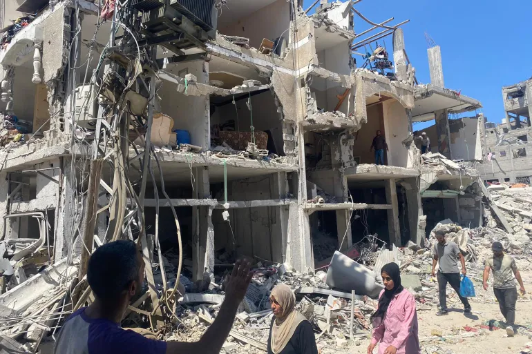

مسيّرة سقطت بيد المقاومة تكشف التدمير الإسرائيلي الممنهج للمنازل شمال غزة

ويهدف الاحتلال الإسرائيلي إلى تدمير الكتلة العمرانية في شمال القطاع وتفريغه من أهله، وتحويل القطاع إلى منطقة لا تصلح للحياة، ضمن ما أصبح يعرف بـ"خطة الجنرالات" التي وضعتها إسرائيل في سبتمبر/أيلول الماضي.
وترمي "خطة الجنرالات" إلى تهجير أهل غزة قسرا، وتحويل القطاع إلى منطقة عسكرية مغلقة، باعتبار ذلك الحل الأخير للقضاء الكامل على أي وجود للمقاومة الفلسطينية.
ويطبق الاحتلال "خطة الجنرالات" بعد نجاح كتائب القسام -الجناح العسكري لحركة المقاومة الإسلامية (حماس)- خلال الأيام الماضية في تنفيذ العديد من الكمائن المحكمة بالقوات الإسرائيلية وتوجيه ضربات موجعة لها في مناطق سبق أن اجتاحتها أكثر من مرة.
اقرأ المزيد
استشهد 10 أشخاص من عائلة رئيس المكتب السياسي لحركة المقاومة الإسلامية (حماس)

استشهد 10 أشخاص من عائلة رئيس المكتب السياسي لحركة المقاومة الإسلامية (حماس) إسماعيل هنية، بينهم شقيقته، في قصف إسرائيلي استهدف منزلهم في مخيم الشاطئ غرب غزة الليلة الماضية، في وقت أقر فيه الاحتلال بمسؤوليته عن الغارة.
وذكرت وسائل إعلام فلسطينية أن عددا من أفراد عائلة هنية الذين كانوا في المنزل لا يزالون تحت الأنقاض، وأكدت أن جل الشهداء الذين قضوا في الغارة الإسرائيلية من النساء.
وأفاد مراسل الجزيرة بأن محاولة البحث عن ناجين مستمرة، مرجحا ارتفاع أعداد شهداء الغارة التي استهدفت منزل هنية.
ومنذ الليلة الماضية، يكثف جيش الاحتلال غاراته على مخيم الشاطئ، كما استهدف مدرسة إيواء تابعة لوكالة غوث وتشغيل اللاجئين الفلسطينيين (أونروا)، مما أدى لاستشهاد العشرات، بينهم أطفال
اقرأ المزيد
بلينكن يدعو نتنياهو إلى "استغلال مقتل السنوار" لإنهاء الصراع
عا وزير الخارجية الأميركي أنتوني بلينكن، الثلاثاء، رئيس الوزراء الإسرائيلي بنيامين نتنياهو إلى "الاستفادة" من مقتل رئيس المكتب التنفيذي لحركة حماس يحيى السنوار للمضي قدما نحو هدنة في غزة وعلى إتاحة إدخال مزيد من المساعدات إلى غزة.
وقال المتحدث باسم وزارة الخارجية الأميركية ماثيو ميلر، عقب المحادثات إن بلينكن "شدد على وجوب الاستفادة من نجاح إسرائيل" في القضاء على السنوار بالتوصل لاتفاق "يضمن الإفراج عن كل الرهائن ووضع حد للنزاع في غزة على نحو يوفر أمنا مستداما للإسرائيليين والفلسطينيين على حد سواء".
كما شدد وزير الخارجية على "أهمية أن تتخذ إسرائيل خطوات إضافية لزيادة واستدامة تدفق المساعدات الإنسانية إلى غزة وضمان أن تصل هذه المساعدات إلى المدنيين على امتداد" القطاع.
اقرأ المزيد
أضف تعليقك